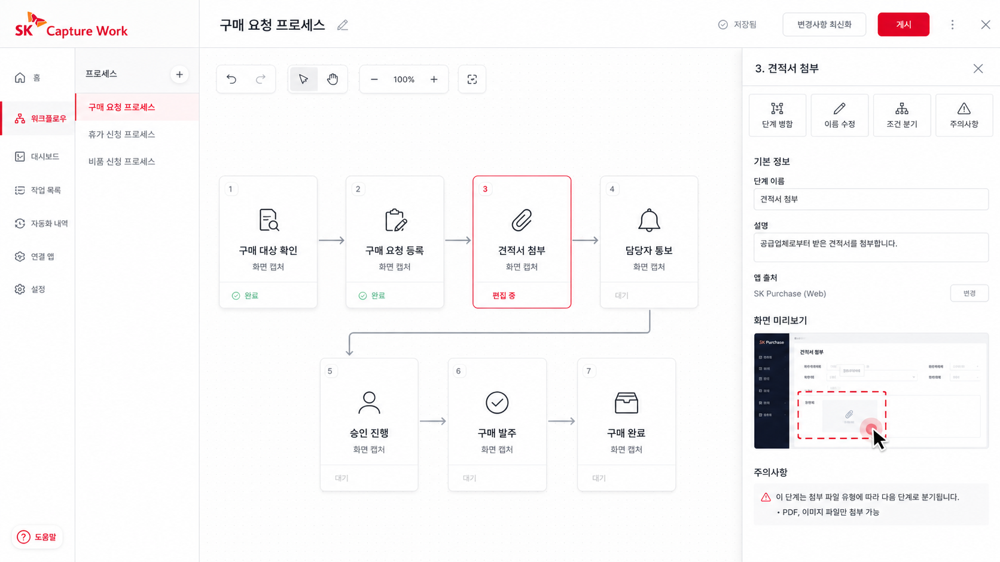
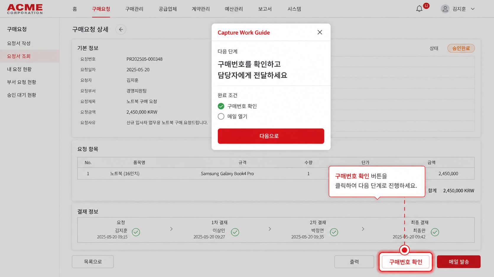

Excel, ERP, 파일 탐색기, 메일을 하나의 처리 흐름으로 묶습니다.
자동 생성된 단계를 수정, 병합, 삭제하며 실행 가능한 표준업무로 정리합니다.
다음에 같은 업무를 할 때 실제 버튼 위치를 화면 위에 다시 안내합니다.
Product View
화면 캡처, 카드 편집, 라이브 가이드가 하나로 이어집니다
긴 영상 편집기가 아니라, 실제 업무 수행 순간을 구조화하고 다시 실행할 수 있게 만드는 흐름에 집중합니다.
01. Capture
실제 업무를 수행하는 동안 필요한 맥락을 함께 기록합니다
활성 앱, 창 제목, 첨부 파일, 저장과 제출, 반복 입력, 판단 지점을 함께 모아 업무 단위의 흐름으로 정리합니다.

02. Structure
타임라인 대신 업무 카드로 정리합니다
단계 순서를 옮기고, 두 단계를 합치고, 조건을 추가하는 방식으로 표준업무를 손쉽게 다듬습니다.

03. Replay
초보자 화면 위에서 실제 버튼을 다시 강조합니다
다음 단계, 완료 조건, 주의사항을 유지한 채 실제 업무 화면 위에서 그대로 따라갈 수 있게 재생합니다.

Walkthrough Video
실제 업무 화면처럼 이어지는 재생 영상
빈 박스 애니메이션이 아니라, 캡처 화면과 카드 편집 화면, 실제 재생 화면이 차례로 이어지는 짧은 제품 릴입니다.
구매 요청 등록 시나리오
- Excel에서 승인 품목 확인
- ERP에서 구매 요청 등록과 저장 후 제출
- 견적서 첨부와 반복 입력 탐지
- 카드형 업무 가이드 생성
- 실제 화면 위에서 따라 하기 재생
Guided Playback
실제 제품처럼 따라 하기 경험을 보여줍니다
각 단계는 설명, 완료 조건, 주의사항과 함께 현재 화면 위에 재생됩니다. 카드나 이미지도 정적인 설명이 아니라 실제 재생 흐름 안에서 연결됩니다.
ERP Capture
구매 요청 등록
Workflow Cards
업무를 이해하기 쉬운 카드로 바꿉니다
1. 구매 대상 확인
Excel
승인 상태인 품목과 수량을 확인합니다.
완료 조건: 승인 여부와 품목번호 확인
2. 구매 요청 등록
ERP
품목번호와 수량을 입력하고 저장 후 제출합니다.
주의: 결재 기준 금액과 VAT 포함 여부 확인
3. 견적서 첨부
Explorer
최근 견적서를 선택하고 첨부 파일 유효성을 확인합니다.
검증: 파일 형식과 발행일 확인
4. 담당자 통보
Mail
생성된 구매번호를 담당자에게 전달합니다.
완료 조건: 구매번호와 수신자 확인